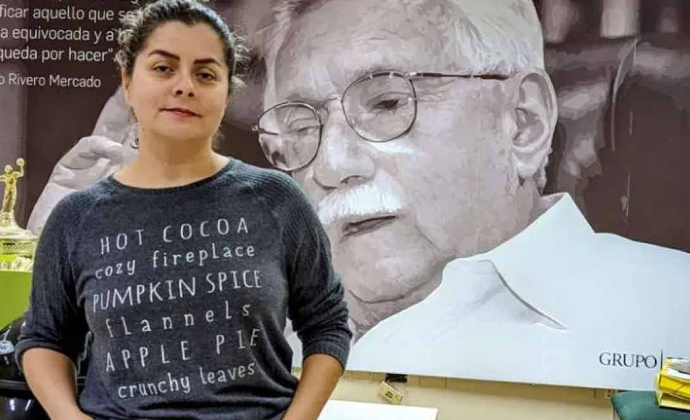
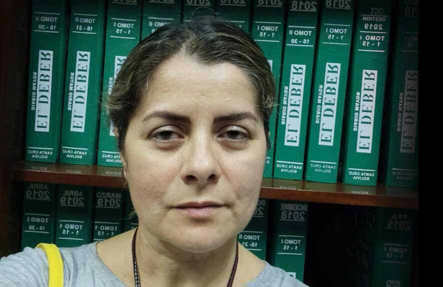
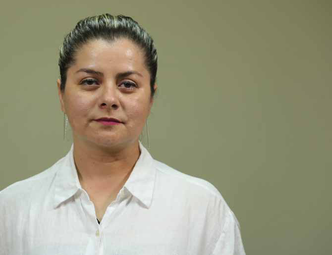

S ilvana Vincenti is an award-winning investigative journalist, widely renowned in Bolivia for her fearless and impactful reporting. An alumna of Gabriel René Moreno University (UAGRM) in Santa Cruz, she brings over 13 years of experience with Grupo Multimedia El Deber, one of the country’s most respected newspapers. Through her work at El Deber, she has built a formidable reputation for incisive investigations into environmental degradation, Indigenous rights, land encroachments, human trafficking, and systemic abuses linked to powerful land mafias.
S ilvana Vincenti is an award-winning investigative journalist, widely renowned in Bolivia for her fearless and impactful reporting. An alumna of Gabriel René Moreno University (UAGRM) in Santa Cruz, she brings over 13 years of experience with Grupo Multimedia El Deber, one of the country’s most respected newspapers. Through her work at El Deber, she has built a formidable reputation for incisive investigations into environmental degradation, Indigenous rights, land encroachments, human trafficking, and systemic abuses linked to powerful land mafias.
Jaffna Monitor hellojaffnamonitor@gmail.com 32 S ilvana Vincenti is an award-winning investigative journalist, widely renowned in Bolivia for her fearless and impactful reporting. An alumna of Gabriel René Moreno University (UAGRM) in Santa Cruz, she brings over 13 years of experience with Grupo Multimedia El Deber, one of the country’s most respected newspapers. Through her work at El Deber, she has built a formidable reputation for incisive investigations into environmental degradation, Indigenous rights, land encroachments, human trafficking, and systemic abuses linked to powerful land mafias. A specialist in exposing the complex interplay between ecological crises and socio-political injustice, Vincenti’s journalism reflects an unflinching commitment to truth, accountability, and the defense of marginalized communities. She clinched first place in the Conservation International (CI) Nature Reporting Award and was a key member of the Amazon Underworld investigative team, which received the prestigious 2024 Gabriel García Márquez Award in the Coverage category. Over the years, she has solidified her status as one of Latin America’s most tenacious and principled voices in journalism. This is her first exclusive interview with an Asian publication. What initially sparked your interest in investigating the activities of 'Kailasa' in Bolivia? Was there a specific tip-off or event that led you down this path? The initial information came to me through an indigenous organization that discovered negotiations between Kailasa and leaders of three Amazonian indigenous nations. They provided me with contracts that included a 1,000-year, automatically renewable land lease, along with other completely irrational clauses. Could you explain how you discovered the presence of Kailasa agents in Bolivia? What made you think something was wrong? After analyzing the documents and confirming their authenticity with the Indigenous people who had signed those contracts, I obtained the phone numbers of the representatives of Kailasa in Bolivia and contacted them. I sent them questions, but they did not respond. They only reached out to me once the matter had already been published. The day after the publication, they showed up at my office trying to persuade me that their intentions were good. I realized something was wrong from the very first time I read the contracts—they were completely illegal because they disguised the sale of land using the word "lease." And this use of land is illegal in Bolivia; it's considered land trafficking. Based on your investigation, what do you believe was Kailasa’s true objective behind these thousand- year land lease agreements? Were they genuinely trying to establish an independent nation within Bolivian territory, or was their main goal to exploit the natural resources and strategic value of the Amazon under the pretext of spiritual and environmental cooperation?
Jaffna Monitor hellojaffnamonitor@gmail.com 33 From what I’ve investigated, Kailasa’s demand for such a vast amount of land didn’t make much sense—especially given that the area was sparsely populated. Only three people were living on the half a million hectares that were negotiated. Kailasa had already signed contracts as early as August last year, meaning that six months passed between the signing of the agreements and the public revelation of the matter. All this leads me to suspect that Kailasa’s true intention was to secure territory in order to function like a sovereign state within another sovereign state. And behind them, I believe there are powerful figures in Bolivia who are interested in the resources within these lands—resources that cannot legally be exploited—using Kailasa as a cover. For instance, at the time Kailasa signed the agreements, Bolivia was changing its policies regarding carbon markets, allowing it to enter that space. In a bankrupt country currently dependent on international loans, this could seem like an attractive economic alternative. I believe someone saw Kailasa’s need for land as an opportunity to gain access to Indigenous territories—perhaps to negotiate carbon credits—while risking national sovereignty. Otherwise, the Bolivian government’s silence, even amid widespread media coverage and in an election year, is hard to explain. It's worth noting that during the height of the controversy, the current president of Bolivia was photographed receiving a gift from a Kailasa representative. Politically, the right move would have been to publicly address the situation. That photo was posted on President Luis Arce’s social media in October last year, during the anniversary of the Indigenous organization CIDOB. How did Kailasa manage to convince Indigenous leaders to sign these extraordinary 1,000-year land lease agreements? What kind of language, promises, or strategies did they use to earn the trust of these communities? How they convinced the Indigenous leaders, how they initially contacted them, and who acted as intermediaries—these are the questions many of us want answers to. Unfortunately, we still don’t have those answers because the Bolivian authorities simply deported the members of Kailasa without conducting any proper investigation. This has led to national criticism and fuels the suspicion that many more people may be involved behind the scenes. I have received messages from Kailasa victims in other countries, asking whether the electronic devices of the Kailasa monks were checked to uncover who brought them into Bolivia. But even as journalists, we are in the dark—this information remains a mystery. From what I know, Kailasa's promises revolved around humanitarian aid. Sadly, in Bolivia, many Indigenous communities have large expanses of land but very limited financial resources to make use of them. On top of that, they face constant threats—land grabbing, fires, intimidation, and other forms of pressure. All of this makes them highly vulnerable to exploitation by hidden interests. It’s also important to clarify that these agreements were made between a few Indigenous leaders and Kailasa, not with the broader Indigenous communities. In most cases, the majority of Indigenous people were completely unaware of these deals.
Jaffna Monitor hellojaffnamonitor@gmail.com 34 I’ve observed that Kailasa operates through an organization called the USK Foundation, which raises funds under the banner of humanitarian assistance. This raises a serious concern: Can donors actually verify that the aid reaches those it’s meant to help? Because, according to the Indigenous people involved, they received nothing at all. This is a crucial point. Kailasa approached Indigenous communities with offers of humanitarian assistance—the same promises they promote on the USK Foundation platform. Beyond the 1,000-year duration, what were some of the most unusual or alarming clauses you found in the lease agreements between Kailasa and the Indigenous groups? The contracts are lengthy—about 40 pages— and almost all of the clauses are absurd and abusive toward the indigenous peoples of Bolivia and the country’s sovereignty. However, to summarize the most alarming points, it appeared as though Kailasa wanted the Bolivian state and Indigenous communities to serve it—as if it were some kind of monarchy. For example, one clause stated that the airspace and the natural resources both above and below the ground would be under the control of Kailasa. This is illegal, as Bolivian law clearly states that such resources belong to the Bolivian state. These clauses are a direct violation of national sovereignty. Kailasa also demanded protection in case of aggression or persecution and stated that this protection should come from both the Indigenous communities and state entities such as the police. However, in the same breath, the contract made it clear that neither the Indigenous groups nor the Bolivian authorities could interfere in Kailasa’s internal affairs.

Jaffna Monitor hellojaffnamonitor@gmail.com 35 Another clause even mentioned the word asylum—it seems the leader of Kailasa may have been seeking to take refuge in Bolivia. Kailasa also self-identified as an Indigenous nation doing business with other Indigenous peoples, completely sidestepping the formal institutions of the Bolivian state. They claimed to have their own passport, embassies, currency, and bank and tried to justify all of this under the constitutional provision for Indigenous autonomy and self-governance in Bolivia. In what way is Kailasa portraying its leader, Nithyananda, as belonging to an Indigenous community— specifically the Saiva Vellalar— when in reality, this group comes from an upper-caste Hindu agrarian background? how are they justifying this identity? I don’t know if, in all their approaches to other countries, Kailasa representatives claimed to be from an Indigenous background, but I do know they did so in Ecuador and Bolivia. In the specific case of Bolivia, the contracts signed with Indigenous leaders show that Kailasa’s delegates identified themselves as Indigenous and strategically invoked certain articles of Bolivia’s Political Constitution, which grants autonomy and self-governance to Indigenous communities—many of whom control vast territories. I believe Kailasa exploited this legal provision to gain the trust of Bolivian Indigenous communities. But they only used the parts of the law that suited their interests. They deliberately ignored the other constitutional clauses that clearly state Indigenous lands are inviolable, non-transferable, non- mortgageable, and indivisible. Nithyananda is widely seen as a spiritual conman with an uncanny ability to deceive. In the case of Bolivia, did he personally play any role, or was it entirely orchestrated by his disciples? What psychological tactics or forms of manipulation were used to persuade the indigenous leaders? Apparently, the negotiations were carried out through Nithyananda’s disciples, but there is no certainty. It’s also quite possible that Nithyananda himself negotiated directly with high-ranking public officials. We could only know for sure if the Bolivian state had shown an interest in investigating the matter. I realized the high level of persuasion Kailasa employs when their representatives came to my office. They are extremely charismatic, calm, and persuasive in the way they speak—and they often send women ahead as representatives. Fortunately, I had already read the contracts before meeting them, and they clearly contradicted what Kailasa claims to stand for. That contradiction raised my suspicions about their true intentions. This religious group promotes a message of humanitarian aid, fraternity, and shared suffering. They use victimhood narratives to place themselves on equal footing with Indigenous communities. But the reality is that the contracts are irrational, illegal, and abusive—especially toward vulnerable groups like the Indigenous peoples of Bolivia. Reports and credible sources suggest
Jaffna Monitor hellojaffnamonitor@gmail.com 36 that Nithyananda is widely known for using his female monks to get close to influential individuals—essentially treating them as "sexual offerings," according to various investigations. Disturbingly, some of these women, reportedly under psychological manipulation, were said to be willing participants. Was there any indication of such behavior occurring during Kailasa’s operations in Bolivia? As a journalist, I had minimal contact with members of Kailasa, aside from a few WhatsApp exchanges with a translator and delegate based in Bolivia, and during the time of the interview with the authorities of that religious group. What I can confirm is that the majority of Kailasa members in Bolivia were women— at least among those who were deported. It appeared they did not make decisions independently, often deferring to their superiors. Since Bolivian state authorities have remained silent on the matter, only they could provide definitive answers—if there were any genuine interest in conducting a thorough investigation. This information is new to me, so out of curiosity, I reached out to a former Kailasa member who is still in contact with me. This was her response: “Nithyananda runs a human trafficking ring—a circle of completely devoted individuals whom he sexually exploits. He constantly demands explicit photos and videos, exerting total manipulation and control. These people show absolute loyalty and are capable of making any sacrifice or carrying out any act for him, even illegal ones such as smuggling assets like gold and cash across borders, money laundering, and sexual services. The leadership functions like a mafia.

Jaffna Monitor hellojaffnamonitor@gmail.com 37 Those at the top know everything, while the people below are kept in the dark about what’s really happening. The Baure, Cayubaba, and Esse Ejja communities are known for their deep connection to their ancestral lands. How did they come to sign these deals with a figure like Nithyananda? Was there consensus within the communities, or were there differing viewpoints and internal debates? It's clear that there was no consensus regarding the signing of the contracts with Kailasa. Proof of this is that when this deal was reported in the media, the leaders who signed it had to publicly retract their claims and withdraw. Furthermore, in Bolivia, there is a legal procedure for Indigenous communities called prior consultation. This means that Indigenous leaders must consult with the grassroots and higher-level organizations on any important decision. Further evidence that the entire Indigenous population was not consulted is that there were moments of tension when the residents of the Cayubaba territory demanded that the Kailasa monks show them the docu- ments because their leaders refused to do so. What was the response from the indigenous communities once your exposé came out? Did they feel deceived, or embarrassed, or were some still defending the agreements? Following the report's publication, the Indigenous communities involved publicly announced their withdrawal from the contract, especially the leaders who signed the documents. In some cases, they claimed they had been manipulated in their innocence. After publishing your story, you faced intimidation and threats. Could you share more about that experience and how you dealt with the pressure to silence your reporting? After the first article was published, I received around twenty phone calls from numbers all over the world. One of the Indigenous leaders involved also messaged me, saying I didn’t know who I had messed with. When the threat became public and received significant media attention, that same Indigenous leader retracted his statement, claiming that he had been under the influence of alcohol at the time. The day after the first publication, representatives of Kailasa showed up at my office unannounced and waited for hours, even though I had told them I would be late. When I finally met with them, they appeared friendly on the surface, but they refused to show any form of identification, and I noticed they were taking photos of me secretly. I later found out that these photos were sent to the Indigenous leaders who had signed the contracts—many of whom were feeling nervous about the press coverage. Kailasa was using these messages to claim they were “influencing me” or had control over me. They also subtly told me that some international media outlets had retracted their stories. They even showed me supposed retraction links on a computer—but refused to share them.
Jaffna Monitor hellojaffnamonitor@gmail.com 38 Most recently, on Sunday, March 30, I received a second threat—this time a legal notice from Kailasa, accusing me of defamation and discrimination against Kailasa based on their Hindu beliefs and Indigenous identity, among other things. They demanded a retraction and gave me a deadline of 48 hours. Alongside this threat, they also intimidated other Bolivian journalists, gradually sending them messages that included links to articles Kailasa claimed were defamatory. How do you assess the Bolivian government’s response to the Kailasa scandal? Were they proactive, or did it take public outrage for authorities to act? The Bolivian government's response was— and continues to be—shameful, as they have not investigated who brought Kailasa into the country or for what purpose. They have also failed to investigate the threats made against the journalists who reported on the issue. The government’s approach has been to simply bury the scandal through brief and vague official statements, and even those only came after significant public pressure. Various organizations have condemned the threats against journalists—but not the Bolivian government. Do you think we’ve seen the end of Kailasa’s operations in South America, or is it possible that more hidden deals, land grabs, or vulnerable communities have been targeted elsewhere? As long as the leader of Kailasa remains a fugitive, they will continue looking for places to shelter him. I suspect that they are still in Bolivia and that not all of their members were deported. They didn’t just reach out to Indigenous communities—they also contacted mayors, since municipal governments also control lands and natural reserves. I believe the world needs to be aware of this situation, especially Indigenous peoples, many of whom live in isolated areas and have no access to this kind of information. In fact, even after reporting on three Indigenous territories, we later discovered a fourth contract with Kailasa, this time involving the Guaraní Indigenous people. Many of Kailasa’s envoys were foreign nationals—Irish, Chinese, and American. Did your investigation uncover how this diverse network was organized and what roles these individuals played? I haven't yet reached that level of research, but some victims who predated the events in Bolivia contacted me to tell me that many followers of Nithyananda are indoctrinated in India. They arrive there with the idea of mysticism in that country, seeking a spiritual answer. It's easy to see that these people, followers of Nithyananda, have no voice since they are not authorized to give answers; they are only a bridge to other people in more hierarchical positions. I could see this when I interviewed them; they didn't respond; they only connected me with their leaders.
Jaffna Monitor hellojaffnamonitor@gmail.com 39 Furthermore, there is a communication aspect of Kailasa that is rarely discussed. Although these monks have no voice, they are trained to film everything and use those images to victimize Kailasa. You can see this on her social media, where Kailasa claims that Bolivian authorities abused her human rights, showed them weapons, etc., but she doesn't say that the authorities simply took their phones because the monks kept recording during the Immigration operations. On its social media platforms, Kailasa doesn’t mention how it attempted to exploit the Indigenous people of Bolivia—an abuse that would likely have continued had the contracts not been made public. Kailasa also doesn’t share the actual contracts signed with Indigenous communities, nor does it acknowledge the statements from these communities denouncing that they were misled and manipulated. According to your investigation, where is Nithyananda’s so-called imaginary country ‘The United States of Kailasa’ actually located? Some reports claim he bought an island in North America, while others say it has no real territory and functions only as a traveling cult. What’s the truth, and is there any credible evidence of a physical nation? When I interviewed representatives of Kailasa, they did not provide any concrete information about its location. They claimed to have autonomous territory and mentioned Oceania, but without specifying exactly where. Previously, when Kailasa made headlines in Ecuador, there were rumors that they had purchased an island in that country. There is a lot of speculation, but very little certainty. Without a doubt, Kailasa is a fictitious nation. A clear example of this is what happened in Bolivia, where they negotiated land while demanding sovereignty and even mentioning the possibility of asylum—likely to benefit Nithyananda himself. Has Nithyananda made any attempts to establish a nation in other parts of the Americas—or elsewhere in the world? Have you come across any credible indications of land claims outside Bolivia? I’m unaware of any efforts outside Bolivia, mainly because Kailasa’s publications in other countries are very vague and general. From what I can tell, their greatest progress was in Bolivia, especially regarding the contracts— perhaps more than anywhere else. But only

Jaffna Monitor hellojaffnamonitor@gmail.com 40 Nithyananda truly knows the full extent of their activities. However, as I mentioned earlier, Kailasa claims to possess sovereign, autonomous, and semi-autonomous territories. One person who might know the locations of these claimed territories—at least in Latin America—is Miguel Antonio Chumapi, an Ecuadorian lawyer affiliated with Kailasa. He lobbied with Indigenous communities in Bolivia and has also worked with the group in Ecuador. Nithyananda is a rape accused and a fugitive wanted by the Indian government. As a journalist who has uncovered the global scope of his activities, what would you say to the Government of India? Is there more they can do? As a journalist, I would tell the Indian government that if they are truly interested in locating Nithyananda, they should communicate directly with the Bolivian government and request the names and passport details of the individuals who were deported, so they can be properly investigated. They should also inquire whether their electronic devices were examined. Perhaps the Indian government could uncover more than what we, as Bolivian journalists, have been able to. What would you like to say to Nithyananda’s blind followers— particularly in India, Sri Lanka, and other countries—who continue to believe in him despite the mounting evidence and criminal charges against him? I would say: Don’t let your need for spiritual connection lead you into networks of manipulation. If I hadn’t read the contracts between Kailasa and the Indigenous communities in Bolivia before interviewing the monks, I might have believed them— they’re extremely convincing in person. But they’re also manipulative on social media, where they distort reality to suit their narrative. However, the documents speak for themselves. They are harmful to Indigenous communities, a threat to state sovereignty, and completely contradict Kailasa’s public message of humanitarian aid. There were red flags from the start: they avoided showing their identity documents, didn’t say where they were staying, and didn’t speak freely without permission from their leaders. They present themselves as friendly to gain trust—but once questioned, they turn threatening, just as they did with us, the Bolivian journalists. They demand retractions under the threat of legal action. Another disturbing sign: they weren’t even living in the territory, yet one of the two houses in the Cayubaba territory was designated as Kailasa’s Supreme Court of Justice. That tells us that their judicial arm is more important to them than their humanitarian mission or diplomatic presence. The question is—why a Supreme Court? Is it to intimidate Indigenous communities, or for something else? Only Kailasa’s current and former members, who are subject to that system of justice, know the answer.